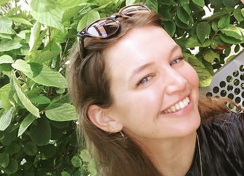
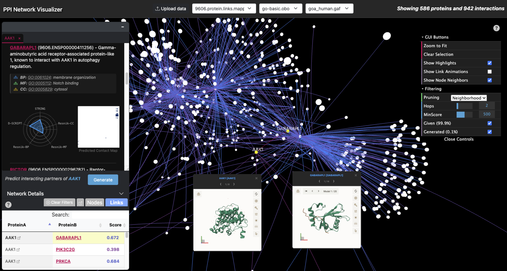
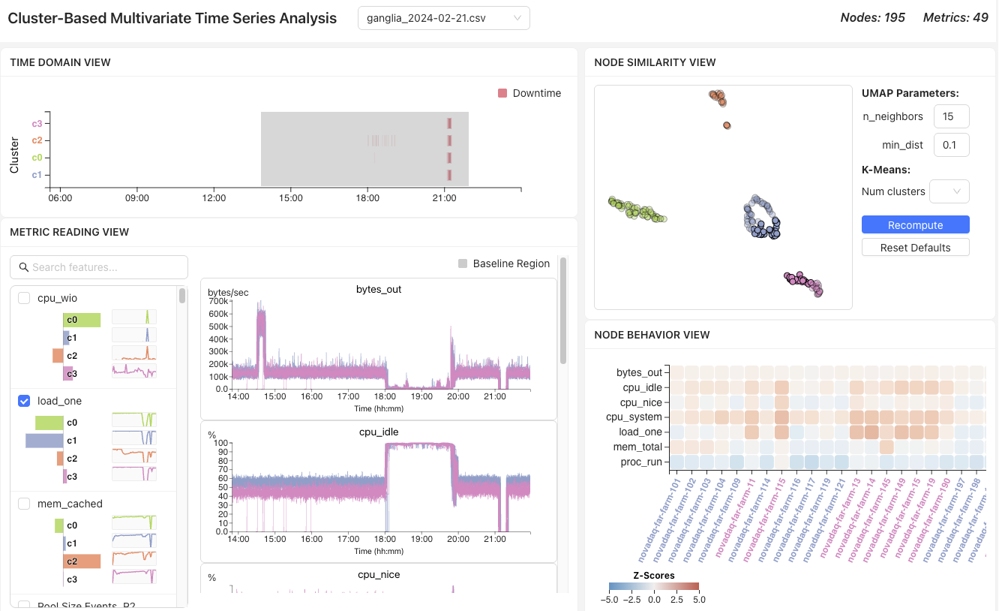
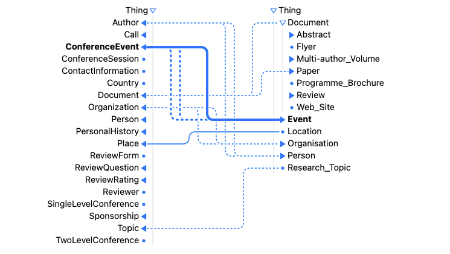

Allison Austin

Contact: amaustin [at] ucdavis.edu
GitHub: allisonaustin
Google Scholar
CV
[2026.03] Our paper "Understanding Large-Scale HPC System Behavior Through Cluster-Based Visual Analytics" has been accepted to ISC 2026
[2025.06] Started internship with the CELS group at Argonne National Laboratory
[2023.11] Presented work at the International Semantic Web Conference in Athens, Greece
[2023.09] Joined the VIDI Group at UC Davis as a PhD student in Fall '23
Theme by orderedlist
I'm a PhD student at the University of California, Davis. I currently work with Dr. Kwan-Liu Ma at the VIDI Labs. I previously worked with Dr. Bo Fu in the D2 Lab at California State University, Long Beach.
Research topics I am currently interested in are visual analytics for explainable AI and monitoring high-performance computing (HPC) systems.
On-going Projects

Visualizing Distributed Resilient Workflows and Infrastructure
With the use of HPC systems for large-scale experiments and simulations, visual analytics tools provide feasible monitoring solutions for many HPC applications. I am currently exploring real-time, interpretable ML-based techniques for visualizing HPC system performance at scale. [details]

Visual Analytics for Generating and Evaluating Protein-Protein Interactions
Molecular data has been widely used to enrich visual representations of protein-protein interaction (PPI) networks, and has been expanded to support large-language models (LLMs) for various tasks (e.g. protein generation, interaction prediction). I am currently exploring visualization techniques for generation and evaluation of PPIs. [poster][code]
Publications

ISC High Performance 2026 (to appear) [code]
Allison Austin, Shilpika, Yan To Linus Lam, Yun-Hsin Kuo, Venkatram Vishwanath, Michael E. Papka, Kwan-Liu Ma

In Proceedings of the 22nd International Semantic Web Conference (ISWC 2023) [paper][presentation][code]
Bo Fu, Allison Austin, Max Garcia